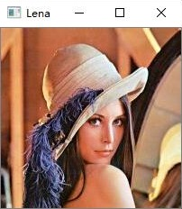

用OpenCV和C++轻松玩转数字图像处理
作者：陈若愚 QQ : 2389388826 日期：2020年/2月/29日 版本：v1.1
Abstract
图像处理是我们很多学生进入科研或者科创的一个选则，因为他入门的门槛很低，实践性很强，而且不像仪器类学科需要科研设备或者深度学习需要强大的计算服务器。目前主流的图像处理是matlab，因为matlab是数据科学常用的一门语言，操作简单，但是matlab在计算速度方面存在问题，而且并不适合工业领域。C++，面向对象的编程，可以算是非常难的一门语言了，但是由于很多软件工程师的努力，我们现在可以非常简单地使用C++和Opencv开源软件进行数字图像处理，希望我的学习记录能够让大家快速入门。PDF地址：pdf
用OpenCV和C++轻松玩转数字图像处理Abstract0. 常用库1. 图像读入、显示与保存2. 图像处理基础2.1 灰度图转化2.2 获取图像属性2.3 读取与修改像素（1）使用OpenCV的at成员函数2.4 提取感兴趣区域ROI2.5 图像通道拆分与合并3. 图像运算4. 类型转换5. 几何变换5.1 图像缩放5.2 图像翻转6. 直方图7. 图像滤波8. 阈值分割8.1 固定阈值化8.2 自适应阈值9. 形态学操作9.1 图像腐蚀9.2 图像膨胀9.3 开运算9.4 闭运算9.5 梯度运算9.6 礼帽操作9.7 黑帽图像处理10. 图像梯度10.1 Rebert算子10.2 Sobel算子10.3 Scharr算子10.4 Laplacian算子10.5 Canny边缘检测12. 傅里叶变换
0. 常用库
1. 图像读入、显示与保存
本人不习惯使用命名空间，这里只记录一下命名空间与非命名空间的比较，后面代码全部使用非命名空间形式
- 不含命名空间格式：
xint main(){ // 工作台输出 std::cout <<"Hello OpenCV!" <<std::endl; // 读入一张图片 cv::Mat img = cv::imread("Lena.jfif"); // 判断图片读取是否有误 if (!img.data) { std::cout <<"读取原始图失败！" <<std::endl; return -1; } // 创建一个名为 "图片"窗口 cv::namedWindow("Lena"); // 在窗口中显示图片 cv::imshow("Lena", img); // 等待6000 ms后窗口自动关闭 cv::waitKey(6000); // 将图片保存为jpg格式 cv::imwrite("Lena.jpg", img); return 0;}- 含命名空间格式：
xxxxxxxxxxusing namespace std;using namespace cv;int main(){ // 工作台输出 cout <<"Hello OpenCV!" <<endl; // 读入一张图片 Mat img = imread("Lena.jfif"); // 创建一个名为 "图片"窗口 namedWindow("Lena"); // 在窗口中显示图片 imshow("Lena", img); // 等待6000 ms后窗口自动关闭 waitKey(6000); // 将图片保存为jpg格式 imwrite("Lena.jpg", img); return 0;}- 输出结果：

并且可以看到保存的jpg格式的图片，以上便是最基本的读取，显示与保存图像。
2. 图像处理基础
2.1 灰度图转化
xxxxxxxxxxint main(){ // 工作台输出 std::cout <<"Hello OpenCV!" <<std::endl; // 读入一张图片 cv::Mat img = cv::imread("Lena.jfif"); // 定义灰度图 cv::Mat gray_img; cv::cvtColor(img, gray_img, cv::COLOR_BGR2GRAY); //旧版用CV_RGB2GRAY // 在窗口中显示图片 cv::imshow("Lena", img); cv::imshow("Gray", gray_img); // 手动窗口关闭后结束 cv::waitKey(0); return 0;}- 输出结果：

2.2 获取图像属性
xxxxxxxxxxint main(){ cv::Mat img = cv::imread("Lena.jfif"); //宽度 int col = img.cols; std::cout <<"宽度：" <<col <<std::endl; //高度 int row = img.rows; std::cout <<"高度：" <<row <<std::endl; //通道数 int channel = img.channels(); std::cout <<"通道数：" <<channel <<std::endl; system("pause"); return 0;}- 输出结果：

2.3 读取与修改像素
（1）使用OpenCV的at成员函数
| 图像类型 | 参数 |
|---|---|
| 单通道灰度 | unsigned char |
| 三通道彩色（8位） | cv::Vec3b |
| 16位灰度 | unsigned short |
| float | |
| 双通道32位 | cv::Vec2f |
- Example(彩色图像部分修改)
xxxxxxxxxxint main(){ // 读取图像 cv::Mat img = cv::imread("Lena.jfif"); // 读取(35，35)的B,G,R值 cv::Vec3b& bgr = img.at<cv::Vec3b>(35, 35); std::cout <<"R通道：" <<int(bgr[2]) <<std::endl; std::cout <<"G通道：" <<int(bgr[1]) <<std::endl; std::cout <<"B通道：" <<int(bgr[0]) <<std::endl; // 修改图像左上角1/4图像为白色 for (int r = 0; r <img.rows/2; r++)//行 { for (int c = 0; c <img.cols/2; c++)//列 { cv::Vec3b& bgr = img.at<cv::Vec3b>(r, c); bgr[0] = 255; //B通道 bgr[1] = 255; //G通道 bgr[2] = 255; //R通道 } } cv::imshow("After process", img); cv::waitKey(0); return 0;}- 输出结果：

2.4 提取感兴趣区域ROI
- Example:提取Lena的脸部图像，并在原图中框出来
xxxxxxxxxxint main(){ // 读取图像 cv::Mat img = cv::imread("Lena.jfif"); // 判断图片读取是否有误 if (!img.data) { std::cout <<"读取原始图失败！" <<std::endl; return -1; } cv::Mat imageROI; imageROI = img(cv::Rect(80, 80, 70, 70));//Rect四个形参分别是：x坐标，y坐标，长，高；注意(x,y)指的是矩形的左上角点 cv::imshow("face", imageROI); cv::rectangle(img, cv::Rect(80, 80, 70, 70), cv::Scalar(0, 255, 0), 3); //将感兴趣区域框出来,这里是用3像素的绿色线标注出来 cv::imshow("ROI", img); cv::waitKey(0);}- 输出结果：

2.5 图像通道拆分与合并
- Example:拆分通道，再将通道顺序取反合并
xxxxxxxxxxint main(){ // 读取图像 cv::Mat img = cv::imread("Lena.jfif"); assert(img.data != NULL); // 定义变量 cv::Mat img_Blue, img_Green, img_Red; std::vector<cv::Mat> channels; // 拆分通道 cv::split(img, channels); img_Blue = channels.at(0); img_Green = channels.at(1); img_Red = channels.at(2); cv::imshow("Original", img); cv::imshow("B", img_Blue); cv::imshow("G", img_Green); cv::imshow("R", img_Red); cv::waitKey(0); // 合并通道（更改顺序） cv::Mat mergeImage; channels.at(0) = img_Red; channels.at(2) = img_Blue; cv::merge(channels, mergeImage); cv::imshow("mergeImage", mergeImage); cv::waitKey(0); return 0;}- 输出结果:

拆分通道的图像

合并后的图像
3. 图像运算
- Example:两个size相同的图片相加
xxxxxxxxxxint main(){ // 读取图像 cv::Mat Lena = cv::imread("Lena.jfif"); cv::Mat opencv = cv::imread("opencv.jpg"); cv::Mat addimg; double alpha = 0.5, belta = 0.5; cv::addWeighted(Lena, alpha, opencv, belta, 0.0, addimg); cv::imshow("addimg", addimg); cv::waitKey(0); return 0;}- 输出结果：

4. 类型转换
- 格式：
cv::cvtColor(src,dst,dtype) - Example: RGB图转灰度与BGR类型
xxxxxxxxxxint main(){ // 读取图像 cv::Mat img = cv::imread("Lena.jfif"); cv::Mat gray_img,bgr_img; // 转灰度图 cv::cvtColor(img, gray_img, cv::COLOR_BGR2GRAY); // 转BGR->RGB通道 cv::cvtColor(img, bgr_img, cv::COLOR_BGR2RGB); // 结果显示 cv::imshow("Lena", img); cv::imshow("gray_img",gray_img); cv::imshow("bgr_img", bgr_img); cv::waitKey(0); return 0;}- 输出结果：

5. 几何变换
5.1 图像缩放
xxxxxxxxxxint main(){ // 读取图像 cv::Mat img = cv::imread("opencv.jfif"); assert(img.data != NULL); cv::Mat sizeimg; // 定义缩放大小 cv::Size dsize = cv::Size(200, 200); // 定义缩放 cv::resize(img, sizeimg, dsize); cv::imshow("Original", img); cv::imshow("Resize", sizeimg); cv::waitKey(0); cv::imwrite("opencv.jpg", sizeimg); return 0;}- 输出结果：

5.2 图像翻转
xxxxxxxxxxcv::Mat RotateImage(cv::Mat src, double angle){ cv::Mat dst; try { //float scale = 200.0/ src.rows;//缩放因子 //cv::resize(src, src, cv::Size(), scale, scale, cv::INTER_LINEAR); //输出图像的尺寸与原图一样 cv::Size dst_sz(src.cols, src.rows); //指定旋转中心 cv::Point2f center(static_cast<float>(src.cols / 2.), static_cast<float>(src.rows / 2.)); //获取旋转矩阵（2x3矩阵） cv::Mat rot_mat = cv::getRotationMatrix2D(center, angle, 1.0); //设置选择背景边界颜色 /*cv::Scalar borderColor = Scalar(0, 238, 0);*/ /*cv::warpAffine(src, dst, rot_mat, src.size(), INTER_LINEAR, BORDER_CONSTANT, borderColor);*/ //复制边缘填充 cv::warpAffine(src, dst, rot_mat, dst_sz, cv::INTER_LINEAR, cv::BORDER_REPLICATE); } catch (cv::Exception e) { } return dst;}int main(int argc, char* argv[]){ cv::Mat img = cv::imread("Lena.jfif"); cv::imshow("source",img); cv::Mat m_ResImg = RotateImage(img, 90); cv::imshow("RotateImage", m_ResImg); cv::Mat m_ResImg2 = RotateImage(img, 30); cv::imshow("RotateImage2", m_ResImg2); cv::waitKey(0); return 0;}- 输出结果：

6. 直方图
xxxxxxxxxxint main(int argc, char* argv){ cv::Mat img, dst, dst1; img = cv::imread("Lena.jfif"); cv::imshow("Lena", img); //步骤一：分通道显示 std::vector<cv::Mat> bgr_planes; cv::split(img, bgr_planes); //split(// 把多通道图像分为多个单通道图像 const Mat &src, //输入图像 Mat* mvbegin）// 输出的通道图像数组 //步骤二：计算直方图 int histsize = 256; float range[] = { 0,256 }; const float* histRanges = { range }; cv::Mat b_hist, g_hist, r_hist; cv::calcHist(&bgr_planes[0], 1, 0, cv::Mat(), b_hist, 1, &histsize, &histRanges, true, false); cv::calcHist(&bgr_planes[1], 1, 0, cv::Mat(), g_hist, 1, &histsize, &histRanges, true, false); cv::calcHist(&bgr_planes[2], 1, 0, cv::Mat(), r_hist, 1, &histsize, &histRanges, true, false); //归一化 int hist_h = 400;//直方图的图像的高 int hist_w = 512;////直方图的图像的宽 int bin_w = hist_w / histsize;//直方图的等级 cv::Mat histImage(hist_w, hist_h, CV_8UC3, cv::Scalar(0, 0, 0));//绘制直方图显示的图像 cv::normalize(b_hist, b_hist, 0, hist_h, cv::NORM_MINMAX, -1, cv::Mat());//归一化 cv::normalize(g_hist, g_hist, 0, hist_h, cv::NORM_MINMAX, -1, cv::Mat()); cv::normalize(r_hist, r_hist, 0, hist_h, cv::NORM_MINMAX, -1, cv::Mat()); //步骤三：绘制直方图（render histogram chart） for (int i = 1; i <histsize; i++) { //绘制蓝色分量直方图 line(histImage, cv::Point((i - 1) * bin_w, hist_h - cvRound(b_hist.at<float>(i - 1))), cv::Point((i)*bin_w, hist_h - cvRound(b_hist.at<float>(i))), cv::Scalar(255, 0, 0), 2, CV_AA); //绘制绿色分量直方图 line(histImage, cv::Point((i - 1) * bin_w, hist_h - cvRound(g_hist.at<float>(i - 1))), cv::Point((i)*bin_w, hist_h - cvRound(g_hist.at<float>(i))), cv::Scalar(0, 255, 0), 2, CV_AA); //绘制红色分量直方图 line(histImage, cv::Point((i - 1) * bin_w, hist_h - cvRound(r_hist.at<float>(i - 1))), cv::Point((i)*bin_w, hist_h - cvRound(r_hist.at<float>(i))), cv::Scalar(0, 0, 255), 2, CV_AA); } cv::imshow("histogram image", histImage); cv::waitKey(0); return 0;}- 输出结果：

7. 图像滤波
- Example:方框滤波，均值滤波，中值滤波，高斯滤波
xxxxxxxxxxint main(int argc, char* argv){ //读取原始图像 cv::Mat srcImage = cv::imread("Lena.jfif"); cv::imshow("original", srcImage); //进行滤波 cv::Mat boxfilter, meanFilter, gaussFilter, medianFilter; cv::boxFilter(srcImage, boxfilter, -1, cv::Size(6, 6));//方框滤波；depth=-1，表示和原图像一致 cv::blur(srcImage, meanFilter, cv::Size(6, 6));//均值滤波 cv::medianBlur(srcImage, medianFilter, 21);// 中值滤波 cv::GaussianBlur(srcImage, gaussFilter, cv::Size(5, 5), 0, 0);//高斯滤波的size必须为正数和奇数 //显示结果 cv::imshow("boxfilter", boxfilter); cv::imshow("meanFilter", meanFilter); cv::imshow("medianFilter", medianFilter); cv::imshow("gaussFilter", gaussFilter); cv::waitKey(0); return 0;}- 输出结果：

8. 阈值分割
8.1 固定阈值化

xxxxxxxxxxint main(int argc, char* argv[]){ // 读入一张图像 cv::Mat img = cv::imread("Lena.jfif"); // 定义变量 cv::Mat matGray, matTHRESH_BINARY, matTHRESH_BINARY_INV, matTHRESH_TRUNC, matTHRESH_TOZERO, matTHRESH_TOZERO_INV; // 转灰度图 cv::cvtColor(img, matGray, CV_BGR2GRAY); // 5种阈值化 cv::threshold(matGray, matTHRESH_BINARY, 156, 255, CV_THRESH_BINARY); cv::threshold(matGray, matTHRESH_BINARY_INV, 156, 255, CV_THRESH_BINARY_INV); cv::threshold(matGray, matTHRESH_TRUNC, 156, 255, CV_THRESH_TRUNC); cv::threshold(matGray, matTHRESH_TOZERO, 156, 255, CV_THRESH_TOZERO); cv::threshold(matGray, matTHRESH_TOZERO_INV, 156, 255, CV_THRESH_TOZERO_INV); // 显示图像 cv::imshow("Gray", matGray); cv::imshow("THRESH_BINARY", matTHRESH_BINARY); cv::imshow("THRESH_BINARY_INV", matTHRESH_BINARY_INV); cv::imshow("THRESH_TRUNC", matTHRESH_TRUNC); cv::imshow("THRESH_TOZERO", matTHRESH_TOZERO); cv::imshow("THRESH_TOZERO_INV", matTHRESH_TOZERO_INV); cv::waitKey(0); return 0;}- 输出结果：

8.2 自适应阈值
在图像阈值化操作中，我们更关心的是从二值化图像中分离目标区域和背景区域，仅仅通过固定阈值很难达到理想的分割效果。在图片中的灰度是不均匀的，所以通常情况下图片中不同区域的阈值时不一样的。在不同局部选取阈值的方法有多种。在OpenCV中实现了两种方法：(1）局部邻域块的均值；(2）局部邻域块的高斯加权和。其函数原型如下：
xxxxxxxxxxvoid adaptiveThreshold(InoutArray src,OutputArray dst,double maxValue,int adaptiveMethod,int thresholdType,int blockSize,double C)src表示源图像数组；
dst表示输出图像组；
maxValue表示预设满足条件最大值；
adaptiveMethod表示自适应阈值算法选择 ADAPTIVE_THRESH_MEAN_C或ADAPTIVE_THRESH_GAUSSIAN_C;
ADAPTIVE_THRESH_MEAN_C的计算方法是计算出邻域的平均值再减去第七个参数double C的值
ADAPTIVE_THRESH_GAUSSIAN_C的计算方法是计算出邻域的高斯均匀值再减去第七个参数double C的值
thresholdType表示阈值类型THRESH_BINARY或THRESH_BINARY_INV;
blockSize表示邻域块大小，用来计算区域阈值，一般选择3、5、7……;
参数C表示常数，它是一个从均匀或加权均值提取的常数，可以是负数。
xxxxxxxxxxint main(int argc, char* argv[]){ // 读入一张图像 cv::Mat img = cv::imread("Lena.jfif"); // 定义变量 cv::Mat matGray, matAdaptive; cv::cvtColor(img, matGray, CV_BGR2GRAY); // adaptiveThreshold(matGray, matAdaptive, 255, ADAPTIVE_THRESH_MEAN_C, THRESH_BINARY_INV, 5, 5); cv::adaptiveThreshold(matGray, matAdaptive, 255, cv::ADAPTIVE_THRESH_GAUSSIAN_C, cv::THRESH_BINARY_INV, 5, 5); cv::imshow("gray", matGray); cv::imshow("adaptive", matAdaptive); cv::waitKey(0); return 0;}- 输出结果：

9. 形态学操作
9.1 图像腐蚀
卷积核：
xxxxxxxxxx[ 1, 1, 1; 1, 1, 1; 1, 1, 1]参考代码：
xxxxxxxxxxint main(int argc, char* argv){ //读取原始图像 cv::Mat srcImage = cv::imread("Lena.jfif"); // 转灰度图 cv::Mat matGray, matTHRESH_BINARY,out; cv::cvtColor(srcImage, matGray, CV_BGR2GRAY); // 5种阈值化 cv::threshold(matGray, matTHRESH_BINARY, 156, 255, CV_THRESH_BINARY); //获取自定义核 cv::Mat element = cv::getStructuringElement(cv::MORPH_RECT, cv::Size(3, 3)); std::cout <<element <<std::endl; //进行腐蚀操作 cv::erode(matTHRESH_BINARY, out, element); cv::imshow("src", matTHRESH_BINARY); cv::imshow("erode", out); cv::waitKey(0); return 0;}- 输出结果：

9.2 图像膨胀
xxxxxxxxxxint main(int argc, char* argv){ //读取原始图像 cv::Mat srcImage = cv::imread("Lena.jfif"); // 转灰度图 cv::Mat matGray, matTHRESH_BINARY,out; cv::cvtColor(srcImage, matGray, CV_BGR2GRAY); // 5种阈值化 cv::threshold(matGray, matTHRESH_BINARY, 156, 255, CV_THRESH_BINARY); //获取自定义核 cv::Mat element = cv::getStructuringElement(cv::MORPH_RECT, cv::Size(3, 3)); std::cout <<element <<std::endl; //进行膨胀操作 cv::dilate(matTHRESH_BINARY, out, element); cv::imshow("src", matTHRESH_BINARY); cv::imshow("erode", out); cv::waitKey(0); return 0;}- 输出结果：

9.3 开运算
9.4 闭运算
9.5 梯度运算
9.6 礼帽操作
9.7 黑帽图像处理
10. 图像梯度
10.1 Rebert算子
算子：

xxxxxxxxxxint main(int argc, char* argv){ //读取原始图像 cv::Mat srcImage = cv::imread("Lena.jfif"); cv::imshow("src", srcImage); //Robert X 算子 cv::Mat robert_x = (cv::Mat_<int>(2, 2) <<1, 0, 0, -1); filter2D(srcImage, robert_x, -1, robert_x, cv::Point(-1, -1), 0.0); cv::imshow("robertx", robert_x); //Robert Y 算子 cv::Mat robert_y = (cv::Mat_<int>(2, 2) <<0, 1, -1, 0); cv::filter2D(srcImage, robert_y, -1, robert_y, cv::Point(-1, -1), 0.0); cv::imshow("roberty", robert_y); cv::waitKey(0); return 0;}- 输出结果：

10.2 Sobel算子
算子：

xxxxxxxxxxint main(int argc, char* argv){ //读取原始图像 cv::Mat srcImage = cv::imread("Lena.jfif"); cv::imshow("src", srcImage); cv::Mat dst, gray, grad_x, gray_y, abs_grad_x, abs_grad_y; //转成灰度图 cv::cvtColor(srcImage, gray, cv::COLOR_BGR2GRAY); //均值滤波降噪，也可以用其他滤波方法 blur(gray, srcImage, cv::Size(3, 3)); //运行Sobel算子，得到边缘 //求x方向梯度 cv::Sobel(srcImage, grad_x, CV_16S, 1, 0, 3); cv::convertScaleAbs(grad_x, abs_grad_x);//提取的深度图片进行显示时，由于是16位图片，要将图片转化成为8位图形进行显示 cv::imshow("x_sobel", abs_grad_x); //运行Sobel算子，得到边缘 //求y方向梯度 cv::Sobel(srcImage, gray_y, CV_16S, 0, 1, 3); cv::convertScaleAbs(gray_y, abs_grad_y); cv::imshow("y_sobel", abs_grad_y); //合并梯度 cv::addWeighted(abs_grad_x, 0.5, abs_grad_y, 0.5, 0, dst); cv::imshow("ALL", dst); cv::waitKey(0); return 0;}- 输出结果：

10.3 Scharr算子
算子：

xxxxxxxxxxint main(int argc, char* argv){ //读取原始图像 cv::Mat srcImage = cv::imread("Lena.jfif"); //将原始图转化为灰度图 cv::Mat grayImage; cv::cvtColor(srcImage, grayImage, cv::COLOR_BGR2GRAY); cv::imshow("src", srcImage); //创建 grad_x 和 grad_y 矩阵 cv::Mat grad_x, grad_y,abs_grad_x, abs_grad_y, dst; //求 X方向梯度 cv::Scharr(grayImage, grad_x, CV_16S, 1, 0, 1, 0, cv::BORDER_DEFAULT); cv::convertScaleAbs(grad_x, abs_grad_x); cv::imshow("X_Scharr", abs_grad_x); //求Y方向梯度 cv::Scharr(grayImage, grad_y, CV_16S, 0, 1, 1, 0, cv::BORDER_DEFAULT); cv::convertScaleAbs(grad_y, abs_grad_y); cv::imshow("Y_Scharr", abs_grad_y); //合并梯度(近似) cv::addWeighted(abs_grad_x, 0.5, abs_grad_y, 0.5, 0, dst); //显示效果图 cv::imshow("Scharr", dst); cv::waitKey(0); return 0;}- 输出结果：

10.4 Laplacian算子
算子：

xxxxxxxxxxint main(int argc, char* argv){ //读取原始图像 cv::Mat srcImage = cv::imread("Lena.jfif"); cv::imshow("src", srcImage); cv::Mat dst, gray; //滤波降噪 cv::GaussianBlur(srcImage, srcImage, cv::Size(3, 3), 0, 0, cv::BORDER_DEFAULT); //转成灰度图 cv::cvtColor(srcImage, gray, cv::COLOR_BGR2GRAY); //运行Sobel算子，得到边缘 //求x方向梯度 //Laplacian(src, dst, CV_16S, 3, 1,0,BORDER_DEFAULT); cv::Laplacian(srcImage, dst, CV_16S);//后几个参数有默认值 //由于是16位图片，需要将图片转化成为8位图形进行显示 cv::convertScaleAbs(dst, dst); cv::imshow("ALL", dst); cv::waitKey(0); return 0;}- 输出结果：

10.5 Canny边缘检测
算子：

xxxxxxxxxxint main(int argc, char* argv){ //读取原始图像 cv::Mat srcImage = cv::imread("Lena.jfif"); cv::imshow("src", srcImage); cv::Mat DstPic, edge, grayImage; //创建与src同类型和同大小的矩阵 DstPic.create(srcImage.size(), srcImage.type()); //将原始图转化为灰度图 cv::cvtColor(srcImage, grayImage, cv::COLOR_BGR2GRAY); //先使用3*3内核来降噪 cv::blur(grayImage, edge, cv::Size(3, 3)); //运行canny算子 cv::Canny(edge, edge, 3, 6, 3); cv::imshow("canny", edge); cv::waitKey(0); return 0;}- 输出结果：